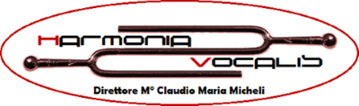

Quattro proposte che conservano l'idea del vostro logo, il diapason, e la ridisegnano per funzionare sul sito, sui social, sulle locandine e in piccolo. Colori e carattere sono quelli della direzione C.

Il logo attuale: il diapason è un'ottima idea, ma il carattere, l'ovale e gli effetti metallici lo rendono difficile da usare in piccolo e datato.Il diapason diventa un simbolo pulito, con due onde sonore ai lati: la nota di riferimento da cui nasce l'armonia del coro. Accanto, il nome in Archivo largo su due righe. È la proposta più versatile: il simbolo da solo funziona come icona.
Le iniziali in un blocco compatto: la H disegnata con lo stesso tratto del diapason, che le sta accanto e fa da V. Un segno forte e istituzionale, simile ai marchi delle grandi orchestre. Il nome completo lo accompagna a destra.
La più fedele al logo attuale: il diapason è sdraiato e le due parole corrono lungo i rebbi, Harmonia sopra e Vocalis sotto, come ora. Tolti l'ovale, gli effetti metallici e il carattere di fantasia, resta un logotipo lungo e riconoscibile, adatto a testate e locandine.
Un emblema circolare, con il diapason al centro e il nome tutt'intorno, come un timbro. Ha il tono delle istituzioni storiche: ideale per locandine, programmi di sala, gadget e avatar. Si abbina a una delle proposte precedenti, non la sostituisce.